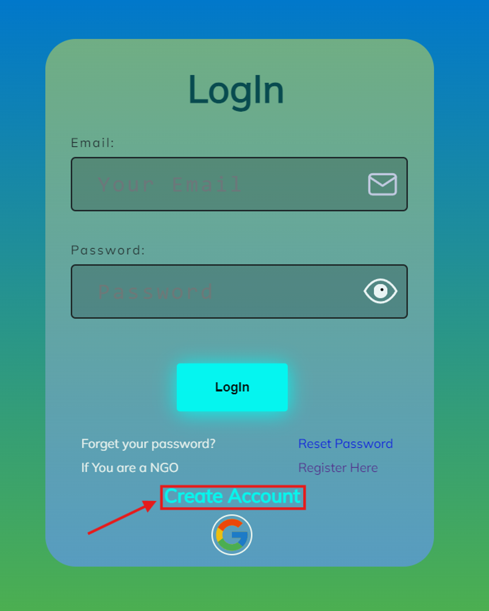
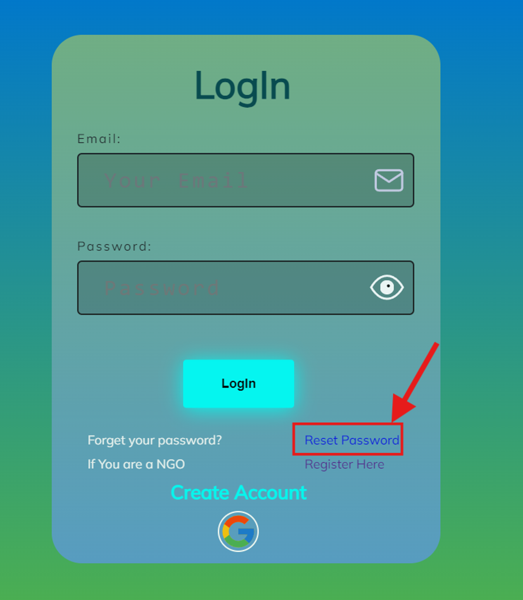

Articles in this section
How To Register As An Individual?
Registering as an individual means you can get the facility to donate to different NGOS as per your
desire.
To register as an individual, click on “LOGIN” button at the top of the page.

Upon initiating the login process by clicking the designated button, users are prompted to input their
designated username and password. Subsequently, a unique OTP (One-Time Password) is automatically
generated and dispatched to the email address linked with the respective account. This pivotal security
measure serves to authenticate user identity, ensuring that only authorized individuals gain entry to
their accounts.
Upon reception of the OTP, users are required to input the provided code to validate their login
attempt. This stringent verification mechanism fortifies account security, thwarting unauthorized access
attempts effectively.
Following successful OTP validation, user accounts are promptly established on our platform, thereby
endowing individuals with comprehensive access to its myriad features and functionalities.
Alternatively, for expedited access, users have the option to opt for the utilization of their existing
Google credentials to facilitate seamless login.
-
If you are a new user, click on the “CREATE ACCOUNT” button present at the bottom of the page.
 -
If you forgot your pass, click on “RESET PASSWORD” present at the bottom right of the page.
